Back
My bag
I'm a nosy gal and the "my bag" page is always my fave to browse at people's websites since the 2000s lolol. Back in the day, I was just a young kid with nothing interesting to show, but now I'm a grown adult with a recently acquired purse pal obsession and a reasonable amount of free time to yap about them.
Click on the bags to see their reviews & comments! Also note that the content of my everyday carry may vary depending on my day's needs.
My bags
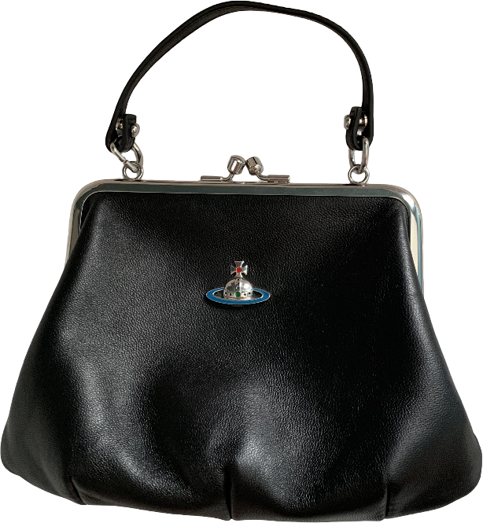
Granny Frame Purse
Vivienne Westwood
Rating: ★★★★★ ❤
I bought this bag from my gay friend who is the biggest diva that has ever stepped foot in this world. Periodt.
What more can I say about it? It's Vivienne Westwood, one of my favourite designers. The bag itself also 100% fits my ~personal aesthetics~. My husband says I have a grandmacore style lol. I'd wear it everyday if I could, but the leather is so delicate that it would be a bad idea.
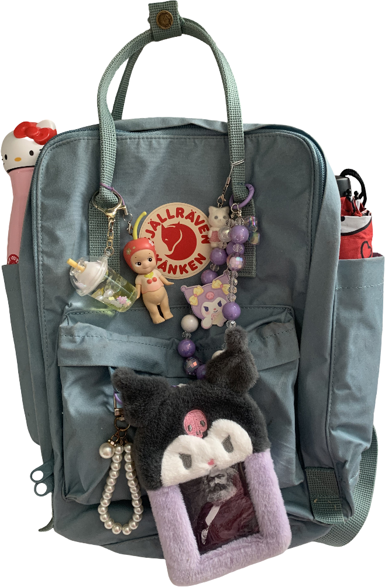
Kånken Laptop 13
Fjällräven
Rating: ★★★★★ ❤
My husband is the biggest Fjällräven enthusiast, he carries his grey Laptop 17 around wherever he goes. These bags are quite overpriced in our country, so I'd always see him as the coolest guy ever.
I was fine with my pink Bagaggio backpack, but some rain incidents happened, like getting my passport all wet, so I had to get a waterproof (at least showerproof) backpack. He highly recommended this backpack, so here I am! I know Kånken is only supposed to be showerproof, but haven't had any problems so far.
I knew I wanted a Laptop one because these are the only ones with shoulder straps (you could always buy them for the regular bags, though). The only disadvantage is that the regular Kånken has more variety of colours. I almost got the Laptop 15 just because it has a lavender shade, but I wanted to get the smallest yet most functional backpack ever. I ended up getting mine in the shade Sky Blue to include different shades of pastel colours in my wardrobe.
I haven't attached any pins to it so it won't ruin the showerproof intent. It's a bit sad, but at least I've got a Karl Marx photocard LOL.

The 13 Inch Batchel
Cambridge Satchel
Rating: ★★★★☆
Like any other teenager/young adult on Tumblr in 2014, I was obsessed with the Cambridge Satchel. Back in the day, I got an Accessorize inspiration and loved it till its last days. I was a young naive girl and got the PU one instead of leather because I was a vegetarian, but that was a dumb decision. It deteriorated fast and maybe I'd still have it if I had gotten the leather one.
My initial plan was getting one in the shade Vintage, which was similar to my late Accessorize bag, but this navy and red one was on sale and I quite liked the colour scheme. I can fit my 13 inch Macbook Air inside it, but it feels a bit too tight when I try to carry my Macbook AND my iPad at the same time.
If I had to say anything bad about it: despite its size, it doesn't really fit a lot of stuff. Maybe that's because the leather is a bit on the hard side and I was expecting the same malleabillity as the Accessorize bag. Mine also got several scratches inside it because of my keys, but that's okay.

Pink Crossbody Bag
Kate Spade
Rating: ★★★★☆
I got this bag at a Brown Thomas sale in Cork. I don't even have the reference to its actual name or anything, I guess this is just an outlet bag. I know some brands make simpler versions of their bags just for outlet purposes and I believe this is the case. Anyways, I got really obsessed with their Love Shack bag, but it was already gone and this shade of pink looked quite similar.
This is the bag you'll see me using most of the time when I don't need to carry my iPad, headphones, or books. I use it when I leave the house quickly and I basically just need my documents, or when I'm travelling.

Le Pliage
Longchamp
Rating: ★★★☆☆
This is a true staple at the average European woman wardrobe for a reason. It has many bonus points: being foldable, so it's very convenient for travelling, and also being showerproof, which is a must in countries like Ireland.
I got the large one in the shade Paper as an attempt to wear more lighter colours. My initial plan was getting the Pink limited edition one, but again, arrived too late for the party.
A big con that made me give it only three stars: it tears easily. Mine has already given some signals... so, even though it fits an immense amount of stuff, I don't recommend carrying heavy stuff on it. Quite upsetting, considering the price.
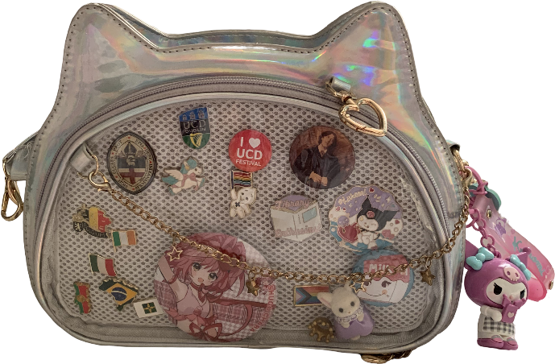
Holographic Ita Bag
Unbranded
Rating: ★★★★☆
I bought this bag at a Dublin Comic-Con. I don't wear it the "traditional Ita bag way", as in: dedicating it entirely to one character or idol. I'm a plural person with many interests lolol.
I usually wear it crossbody due to convenience, but it also comes with shorter straps if you want to use it as a shoulder bag or as a handbag.
Unfortunately, I recently torn it up a bit on the side (my fault, not really the bag's), so I haven't been using it. I have to fix it. :(
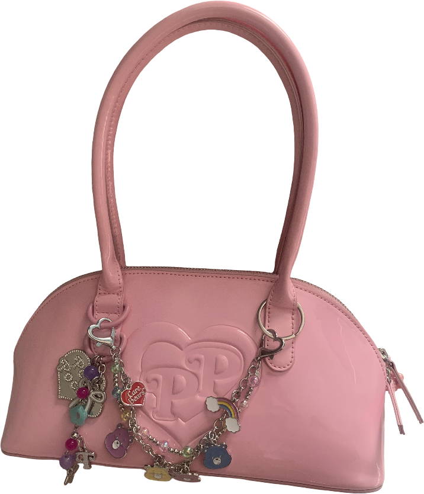
Polly Pocket Bowling Bag
Bershka
Rating: ★★★☆☆
I saw this bag on a tiktok (LOL) and got immediately obsessed with it. I also knew I had to customise it even more, so I got this Care Bears accessory on Shein.
It's a cheap fast fashion bag, so don't expect durability from it. As a Polly Pocket fan since 2003 lol, I can accept that because this design is sooooo cute.
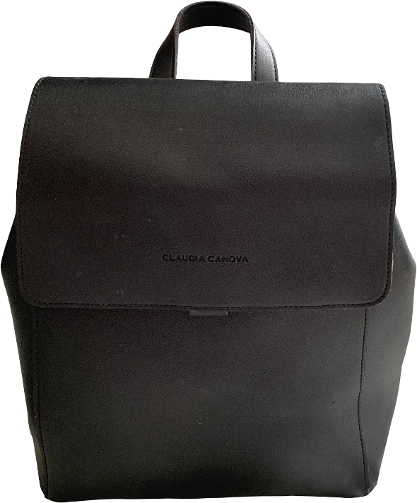
Unlined Flapover Backpack
Claudia Canova
Rating: ★★★☆☆
Just a basic small black backpack. It fits my iPad or a book or two, which makes it a good fit for when I'm visiting my friends on the countryside.
I only give it three stars because it's made of PU (a good quality one, but still PU) and it doesn't have zippers. Dublin is dangerous, I don't wear it often because I'm too scared of pickpockets.
Mochila Feminina Executiva Para Notebook Studio Rose
Bagaggio
Rating: ★★★★☆
I love this backpack. First of all, it's rare to see big laptop backpacks with lots of compartments in cute feminine colours. Secondly, it's not the most expensive bag or anything, but it was quite pricey considering the salary I had at the time I got it, so it felt like an achievement.
My only downsides to it: it's not showerproof, and it really lacks side pockets for water bottles or umbrellas.
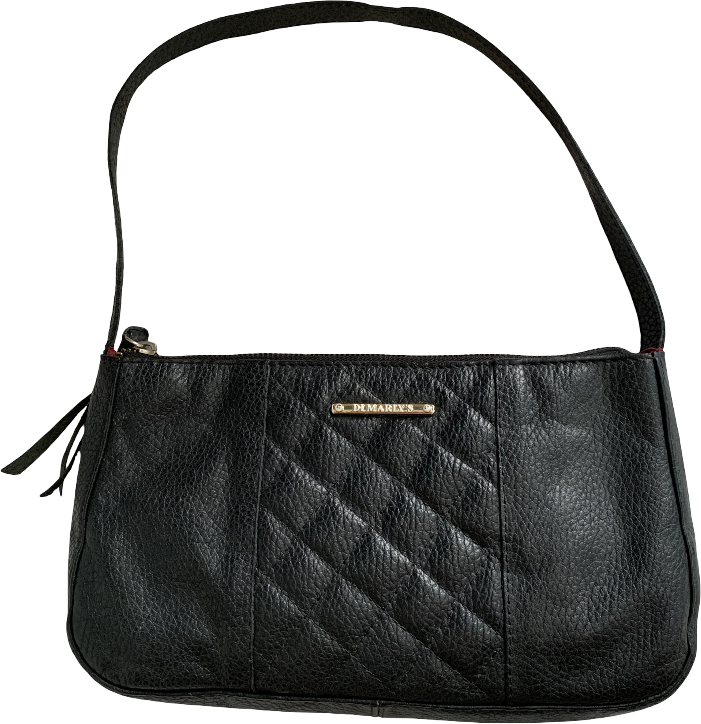
Black Baguette Bag
Di Marly's
Rating: ★★★★☆
This was my everyday bag before getting the Kate Spade. My mum gave it to me as my first leather bag, so it has sentimental value.
I won't give it 5 stars just because sometimes it falls off my shoulder when I'm walking, but I mitigate this problem by holding its strap lol.
Black Tote Bag
Unbranded
Rating: ★★☆☆☆
It's just a cheap tote bag. I bought it when I was working and I felt like my backpack was "too childish" and I needed "an adult bag". To be honest, since I left that job, I haven't worn it again. Not because it's bad, just because it's... too simple. And now I've got plenty of unique bags full of personality.
Again, this bag gets bad rating because it's made of PU. It won't last long. :(
Everyday Carry
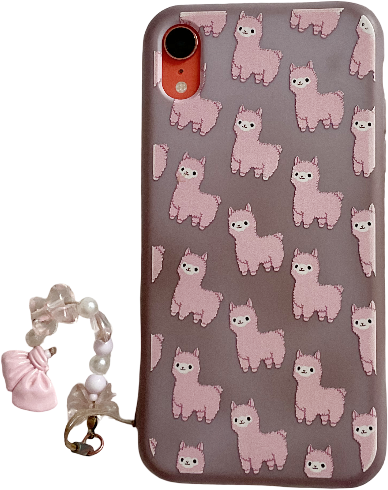
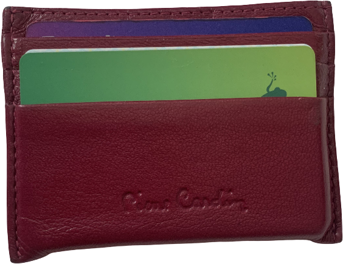
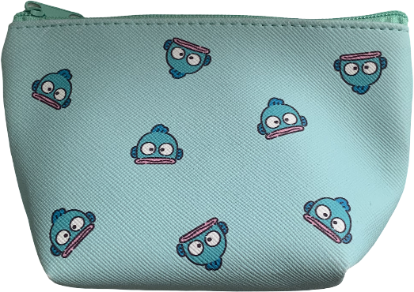
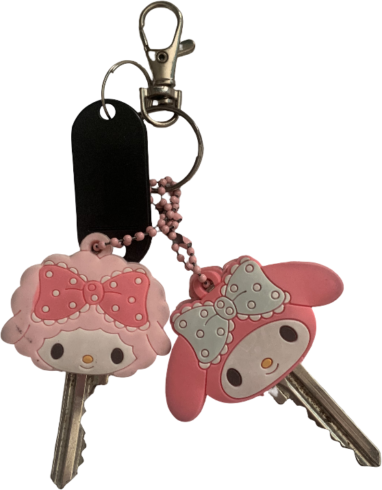
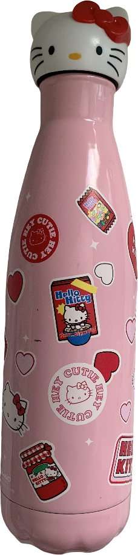
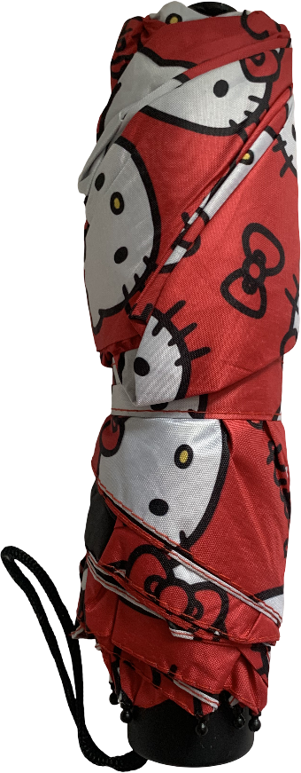
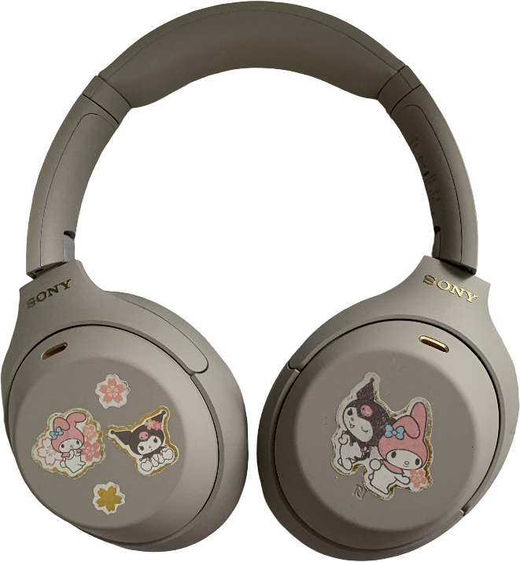
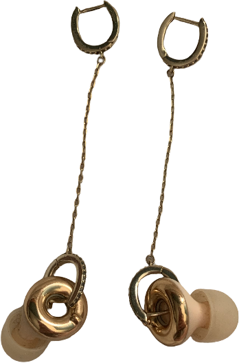
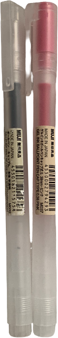
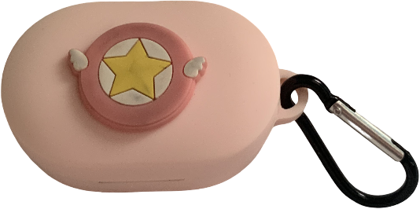
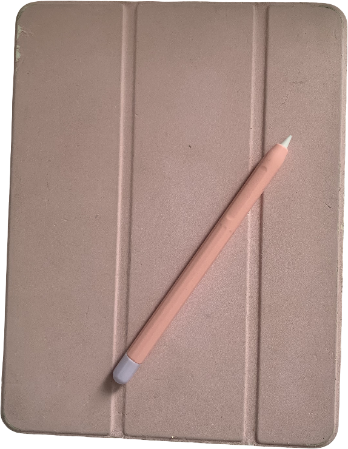
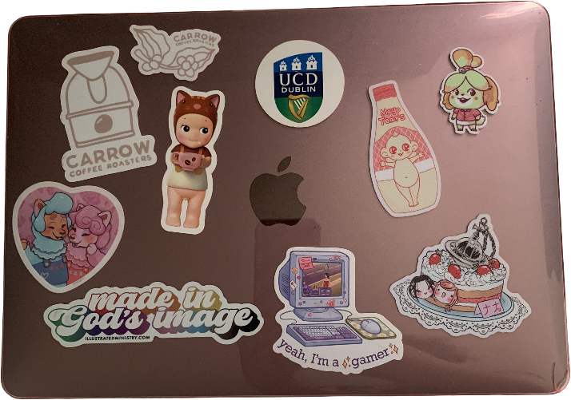
Dream bags
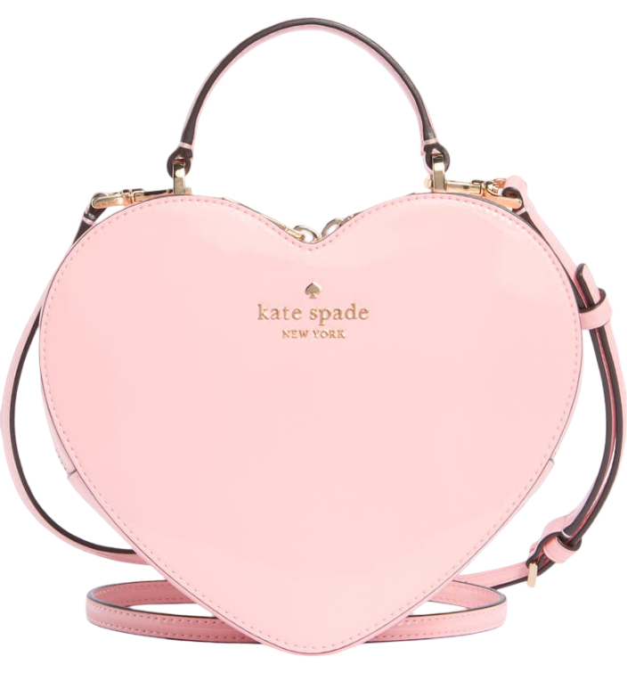
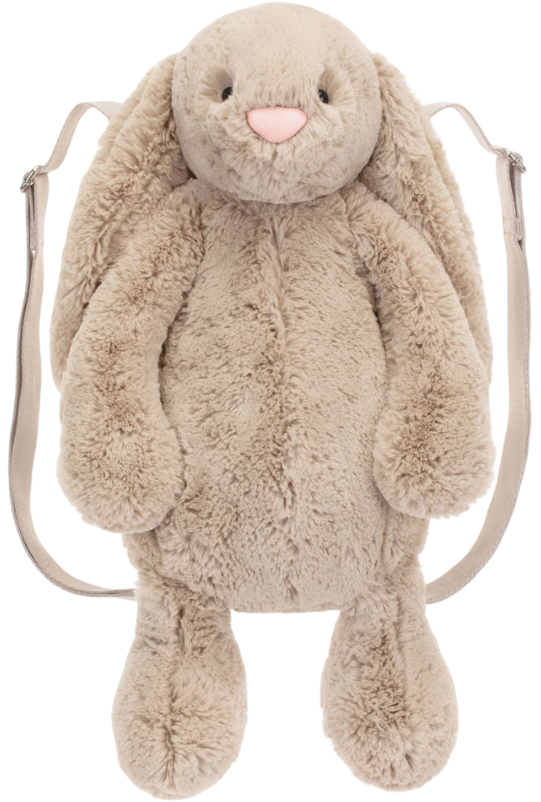
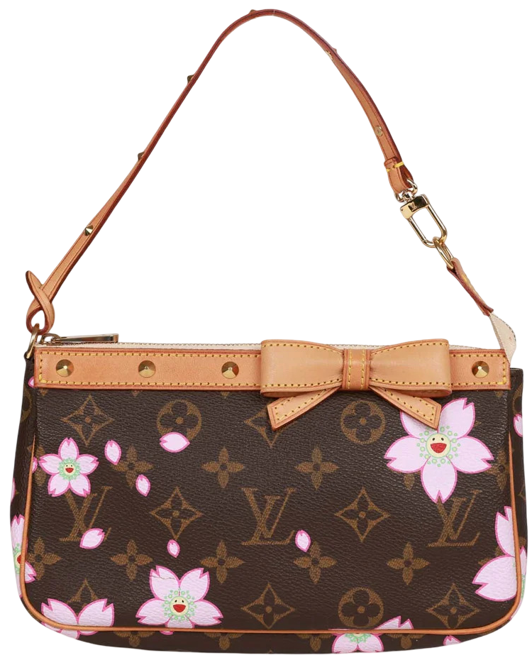
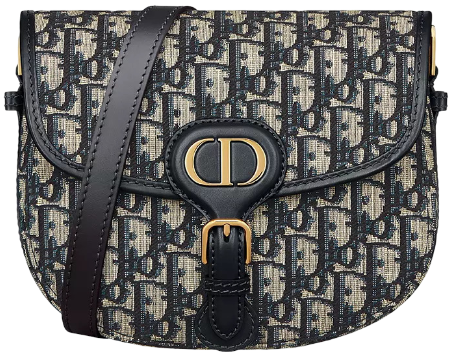
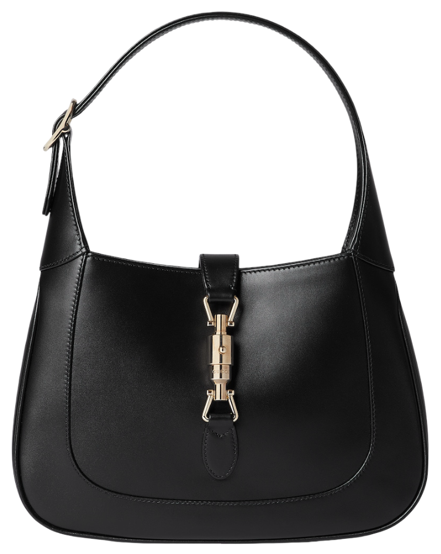
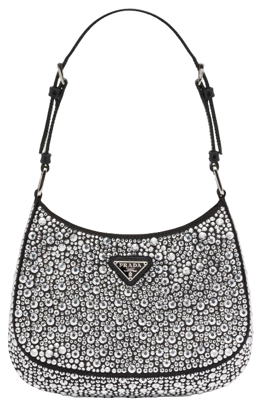